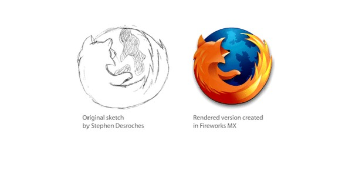

Uma Raposa ou um Panda Vermelho?
Provavelmente você já deve ter usado o navegador Mozilla Firefox e percebeu o quanto sua logo foi alterada com o passar do tempo. Mas você sabia que o mascote inserido na logo não é uma raposa?
A primeira ideia
No início, a primeira ideia era usar o nome “Phoenix” (Fênix em português), a famosa ave mitológica que renasce das cinzas. Logo em seguida, surgiu o nome “Firebird” (Ave de fogo), mas ambos os nomes foram descartados por já estarem sendo usados por outros projetos.
Esta era a versão inicial desenvolvida pela Phoenix
O panda
A primeira versão do mascote que conhecemos hoje do Mozilla Firefox foi desenvolvido por Stephen Desroches.
Desroches desenvolveu a logo utilizando uma imagem conceitual do animal envolvendo um globo azul. Logo em seguida, a equipe de design do FireFox desenvolveu a primeira versão utilizada para o navegador.
A confusão
A confusão entre o panda vermelho e a raposa deu-se por conta do Panda vermelho não ser um animal muito conhecido.